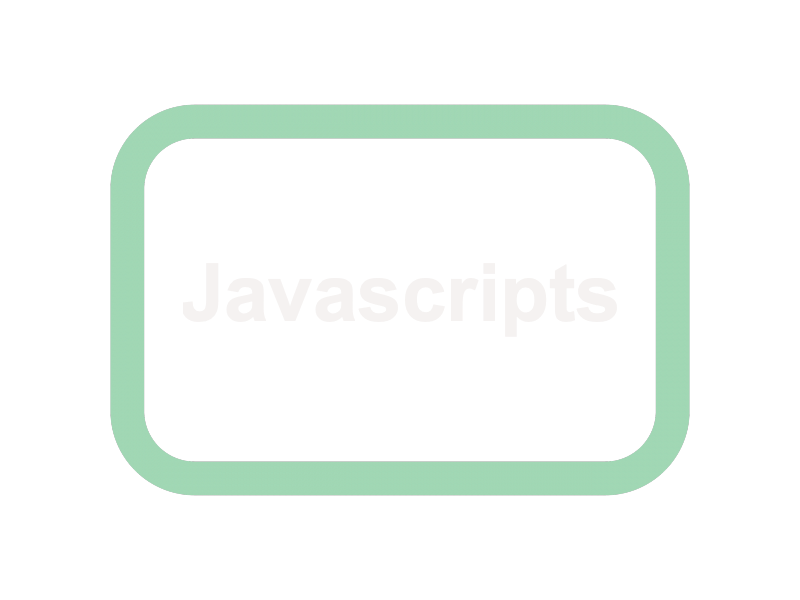
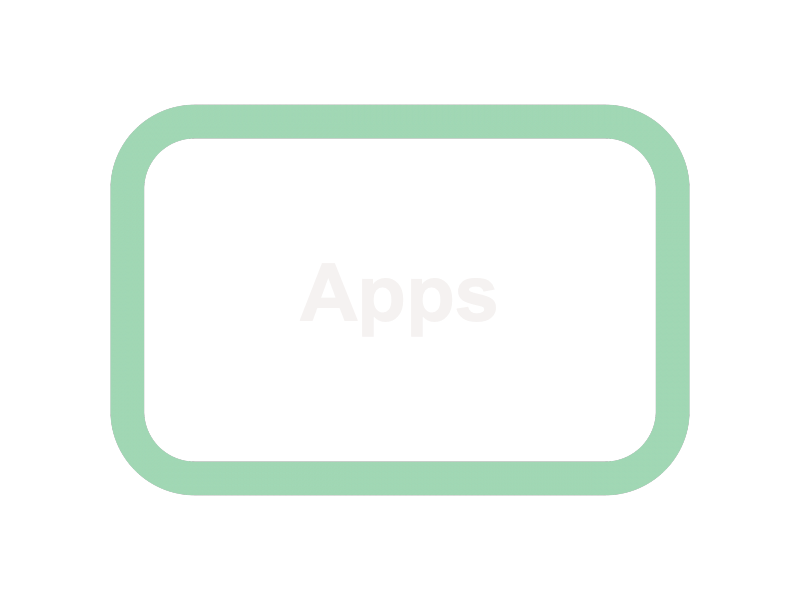
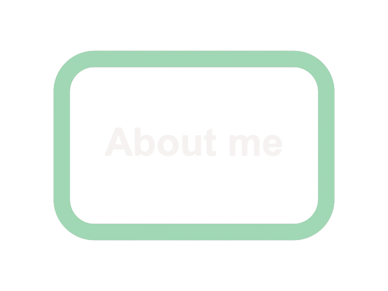

Apps!
I understand this page is meant for the apps that I will be making, but I figured there could be more use to it as of now!
It also seemed like a really good way to get used to different coding methods and/or habits.
Currently, my favorite apps to use for coding or editing the final layout are Mimo ,
Imovie ,
and
Mematic.
They work really well for the amature, and allow people to take on an artistic side to things, making them think more about the artform
than the tedious work in between. This isn't to take away from the interesting art of coding, but it is to bring in another perspective.

Back to homepage
 |
 |
 |